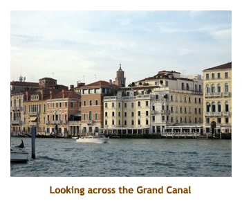
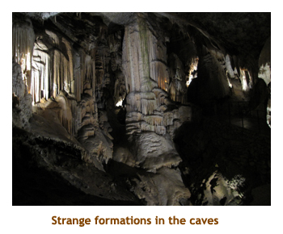
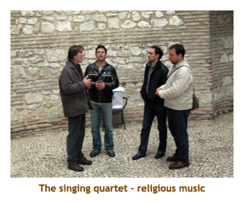
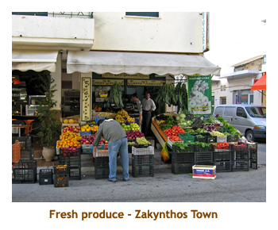

[ Home ] [ Travel ] [ Photography ] [ Pets ] [ Games] [ Rowing] [ Physics ]


Cruising on the Oceania Nautica
Travel
Cruises
Past Cruises (Diaries)
Future Cruises
Rogues Galleries
Land Trips
Diaries (Land Trips)
Hawai'i - Big Island - 04'01
Hawai'i - Maui - 05'02
Hawai'i - Big Island - 04'03
Hawai'i - Kaua'i - 09'04
Hawai'i - Big Island - 04'06
Hawai'i - Maui - 04'06
Mainland China - 05'07
Phoenix, Arizona - 12'07
Greek Isles - 05'08
Hawai'i - Kaua'i - 09'08
Hawai'i - Big Island - 09'09
Hawai'i - Maui - 05'12
Hawai'i - Big Island - 04'13
Ireland - 08'13
Mexico - Cancun 11'13
France/Belgium/Lux 07'15
Hawai'i - Big Island - 05'17
England / Wales - 06'17
Hawai'i - Big Island - 09'19
Photography
Cameras
Underwater
Pets
Tara
Blackie
Whitey
Muffy
Ollie
Rusty
Fluffy
Rufus&Dufus
Games
Rowing
Physics
Rating (out of 5): Ship  Food
Food  Service
Itinerary
Service
Itinerary
This was our second trip on Oceania, in fact on the same ship. We had enjoyed the Nautica on the Black Sea and looked forward to cruising on her again. We chose the itinerary because it hit several new ports and would be a warm getaway for November. This was a unique cruise in that there were no sea days - every day was a day in port. We had to be up early each day for our excursion, which meant early to bed, but that was fine as we had seen the entertainment on our past cruise (same performers as before).
Overall, it was a wonderful cruise. The only couple of complaints I had was the late dining hour (didn't start until 6:30 and took about 2 hours) and the limited activities aboard (Marj and I are really "big ship" people). Most passengers we talked to loved the small ships and were later diners anyway, so very few shared our concerns.
Pre-cruise (Oct 29,30) - Travel to Venice
We got up about 7:00 AM and put the finishing touches on our packing
for the trip. No matter how early we start our packing, there always seem
to be some last minute items. The airport shuttle came right at 10:00
AM. We were the only passengers, so the trip to the airport was quick.
We were to the airport in plenty of time. Marj called Chrissy (working
at the airport) and she met us for a short visit. Our Lufthansa flight
was delayed slightly, leaving at 1:30 PM. The flight to Frankfurt was
uneventful and we arrived at 6:30 AM local time (the next day). We had
a two hour connect time which seemed like lots, but there was a lineup
going through customs. We then had to hike to the domestic terminal building
where there was a huge lineup going through security. By the time we reached
our departing gate, the 2 hours were gone! Don't get a tight connection
in Frankfurt!
The flight to Venice was only an hour long and we arrived there at 10:00 AM. We gathered our
luggage from the carousel and headed over to the Oceania girl. There were staff from several
cruise lines there. We boarded a bus and drove to the ship at San Basilio dock in Venice. This
dock is in the industrial end of Venice, no where near as convenient as where we docked on the
Brilliance in 2006. However, it did provide an opportunity to see a different part of Venice. We were
through checkin and on the ship by 12:00 noon. As we boarded we were informed that our staterooms
would not be ready until 3:00 PM! On other cruise lines we had at least been able to drop off our
carry-on bags in our stateroom, but not on the Nautica. We were destined to drag around our bags
for 3 hours as we wandered the ship. and, on top of that, we were in a daze from not sleeping for
the past two days. Oh, the fun of traveling!

We went straight to the buffet to obliterate the memory of three unexciting airplane meals.
After eating our fill, we went to the top deck and sat in the comfy lounge chairs in the warm
afternoon sun. We dozed a bit and suddenly it was 3:00 PM. An announcement signaled the rush
to staterooms. Our suitcases were already in our room so we unpacked and hung everything up.
It was warm and sunny, a great day for a stroll. We headed off the ship and did a walk along the
banks of the Canal of Giudecca as far as we
could go - to the Punta della Dogana. The bridges still had the wooden ramps from
a Marathon competition the week before. There was a temporary statue exhibit at the
Punta of a boy
holding a fish. It must have been valuable as there was a policeman standing right next to it.
Across the water we had a great view of the San Giorgio Maggiore Church to the right, and
the Piazza San Marco on the left. A row boat powered by several training gondoliers
went past us along the canal.
Retracing our steps, we noticed a small grocery store near the ship.
We would have to check it out tomorrow.
Back at the ship, we were too tired to do the
dining room so just popped to the buffet for dinner. We went to bed early, but I didn't get to sleep
until about 3:00 AM. And, to top it off, it was the end of daylight savings (in Europe) and we had to
adjust our clocks another hour. Oh well, it was a travel day.
Day 1 (Oct 31) - A Day in Venice
Today was forecast to be cloudy with rain. We were here exactly 4 years ago (for Hallowe'en)
and it had been 30 degrees and sunny. Not this time!
Our alarm woke us from a deep sleep at 7:00 AM. We had to be ready for a tour at 8:15. We
scarfed down our breakfast and headed out to meet the tour.
Our tour would take us to the islands of
Murano (glass blowing) and Burano (lace work). We boarded an adjacent passenger ferry
and set sail for the island of Murano. This small island is noted for its glassware. During the
Renaissance period, the glass shops were moved from Venice to Murano to reduce the
chance of a major fire in Venice. We exited the ferry and walked a short distance to a glass
factory. It was inside a huge building. There was plenty of seating close to the warmth of the
firey kilns. The glass blower made three quick pieces - a vase, a cat and a mouse. He
was very talented. It reminded us of the glass shows on the new Celebrity ships. After
the demonstration we were directed into a two story shop with racks of vases, bowls, goblets,
etc of all shapes, sizes and colours. As we weren't interested in buying any glass, we looked
quickly and then went outside to see a nearby Byzantine church
(Basilica die SS Maria e Donato) from the 12th century. Then it was time to head back to the
ferry.
We left Murano and set course for Burano, some distance away. Arriving at Burano, we
walked past an old church (with a leaning tower) and into a large town square. all of the
shops lining the square were painted brilliant colours. The heavy cloud and rain certainly
dimmed the effect - I wish the sun had come out! We entered a number of the shops which were
full of table cloths, clothing and other lace items. Two or three of the shops had little old ladies
demonstrating how to make the lace. It was very interesting. After seeing all we wanted, we took
a walk down the small canal leading through town. It was a very interesting island. It was time
to climb back aboard the ferry and return to the ship. I didn't realize how far we had come
from Venice, but the guide announced that we would be back at the ship in an hour. As we
skimmed across the lagoon, the guide pointed out several inhabited islands. It really did
take almost an hour by the time we were dropped off back at the ship about 1:00 PM.
Back onboard the ship we headed up for lunch. I had fish & chips and a chocolate banana
shake. After lunch we headed out to the nearby
grocery store where I picked up some Italian beer and Marj got some fruit juice. The Peroni beer
was only Euro 2.70 for a 4 pack. Back on the ship I headed up to the gym for a workout. After cool
down and a shower we got ready for dinner. Dining on the Nautica is "anytime" dining, there
is no fixed seating. The restaurant opens from 6:30 to 9:30. We found it to be somewhat late
as by the time the appetizers came it was after 7:00 and dinner often finished close to 9:00.
Evening trivia was at 8:45 so we often left before desert (didn't need it anyway!). Tonight I had
the rack of lamb. Excellent! We had to sprint away early to make the Cruise Critic meeting at
8:30 in Horizons. The meeting was very well organized. Everyone introduced themselves. Then tour
leaders read out lists of participants so that all could meet each other. Very smart! The band started
up at 9:30 for the Hallowe'en dance, so we were drowned out. After a
quick walk outside we went to bed.
Day 2 (Nov 1) - The Caverns of Slovenia
It was stormy through the night and we were rocking and rolling pretty good. There were
lots of first time cruisers aboard, so this was a good introduction. We met several people aboard
who did not fare well at all in the choppy seas. I noticed on the TV channel that shows the ship's
position on the map that, although Koper is due east across the Adriatic from Venice, the captain
diverted southwards at one point and then back north again later as if skirting the heart of the storm.
Marj and I do not get seasick at all, but the rocking does wake us up - sort of like trying to sleep
on a plane while passing through turbulence. Anyway, after an interrupted night we woke up at 7:00
to have breakfast and get ready for our private tour that we had booked with some other CC folks.
It was going to be another cloudy, rainy day, with a high of 17 degrees. The other peculiarity about
today is that November 1 is "All Saints Day" - a Catholic holiday where families visit the gravesites
of their family ancestors and place flowers in their memory. Slovenia has a Catholic majority,
thus there were limited tour options as
basically the whole county is closed for the day. However, this did not interfere with the itinerary
that we had chosen.

We headed off the ship at
8:00 to meet our guide for the day. Sometimes the local guides are difficult to understand because
of their accent, but this guy, Graeme Chuter, was a transplant from Britain, so we understood him just
fine. Two groups of us had booked with him, so there were two vans and two guides. Fortunately
we got the English speaking one! The first (and only) problem was that the second van had
a tire that was going flat. We took a slight tour to a gas station, but it was closed for the holiday.
They decided it wasn't serious enough, so we headed trhrough the town of Koper and out onto
the highway. We were heading east into the mountains. After about an hour we arrived in the
village of Postojnska where there were some amazing limestone caves. We had to wait for
10:00 AM for the caves to open. The cave system runs underground for 20 km. Once
underground, the temperature remains a constant 9 degrees. The tour would last 1.5 hours
seeing us out again by 11:30. The two guides, who weren't accompanying us into the caves,
would use the time to get the tire fixed. We boarded
a small train that whizzed us the first 2 km into the mountain. The train sped through some pretty
small openings, so we had to keep our hands and heads in. Then we got off the train and walked
for 1.5 km through cavern after cavern. It was absolutely amazing. The caverns were huge,
some of the ceilings being 40 meters high. The stalgtites and stalgmites were everwhere.
Special lighting highlighted the shapes and colours around us.
It really was breathtaking. One of the caverns was set up to host underground concerts.
There was also a small glassed in aquarium loaded with some of the creatures found deep
in the caves, including a sightless salamander called a Proteus.
We reboarded the train for a thrilling back to the real world. It turned out that while we were getting dripped on from the cavern ceilings, a torential rainstorm had passed through outside. By the time we were out of the cave, the rain had stopped. We hopped in the van and continued through the countryside to a medieval castle built into the mountainside (Predjama Castle). We didn't go inside. Then we headed back towards Koper. As we neared the coast, we stopped at a restaurant for lunch. I had the "three hunter" veal tornadoes - veal with three different sauces. Very good. After lunch we headed southwards along the coast, right to the Croation border. The coastline of Slovenia is quite short (only 47 km), with Croatia to the south and Trieste, Italy to the north. Driving back northwards we stopped in the fishing village of Piran. It was a pretty village with colourful buildings surrounding a huge town square. The town's claim to fame is as the birthplace of Guiseppe Tartini (1692 - 1770) - a famous composer and violinist, born when this area was still part of Italy (the Venetian empire). There was a large statue of him in the center of the town square. We wandered through the town and were surprised that a few of the businesses were open, perhaps because of the presence of a cruise ship! Most of the businesses had "Tartini" in the name, be it a hotel, a restaurant, or whatever. Marj bought some goodies from a chocolate store. We walked along the waterfront checking out the yachts and fishing boats and headed back to the van. We drove back to Koper arriving at the ship at 5:15. It had been a wonderful day despite the weather and we had seen and learned so much about Slovenia.
We hit dinner at 6:30 and I had lobster tail on risotto. The service was really slow and
we didn't get out until after 9:00. So, we missed trivia again. Off to bed!
Day 3 (Nov 2) - Split, Croatia
Once again we had a rocky night. The ship headed out into the Adriatic and right into
another storm. Our cabin was at the front of the ship and we could hear as the ship rose
and then slammed down onto the water. What fun! We got up at 7:30 for breakfast and our
excursion at 9:00. Once again the day was forecast to be cloudy with rain. Today was a
half-day ship's tour. We boarded the bus, drove through the city of Split and headed out
along the coast .We stopped at an old stone building that was once a water mill. It was
called the Old Mill (Pantan). There we
had a snack of sandwiches and wine and listened to some traditional Dalmation songs
performed by local singers / musicians. There was a small pond beside the building with
geese swimming around, and lots of cats and kittens running around. We enjoyed the stop.
Then it was back on the bus as we headed
for the nearby historic town of Trogir.
Situated on a small island nestled between the mainland and the larger island of Civio,
Trogir is connected to the mainland by a small bridge. With the exception of its green parks,
the entire island is filled with stone houses, palaces, churches, monasteries, towers and walls.
In fact, Trogir largely resembles a large, open air museum. After leaving the bus, we walked
across the bridge and into the old town. The streets were narrow and pedestrian only. Our
first stop was at the huge 13th century Cathedral of St. Lawrence. Then we walked up and
down the streets visiting the town loggia, the town hall and the Cipiko Palace. Despite the
clouds and rain it was a wonderful walk on the ancient marble streets. We were given time
on our own to visit the tourist shops inside the town walls. Although the shops were interesting,
I don't think we bought anything. Then it was time to reboard the bus and drive back to
Split. We drove back along the same highway and were soon back in the town of Split.
Split is one of the oldest cities in Croatia, generally considered to be over 1,700 years old.
At the core of this sprawling city, lies the Roman palace that Emperor Diocletian built at the
end of the 4th century AD. What had begun as an imperial residence and fortified camp is now
an intriguing warren of cobblestone streets, pre-Romanesque churches, Gothic chapels,
museums, art galleries, restaurants and charming cafes. Some of the arcitecture is Roman
(some just ruins), while many of the old Roman buildings have been rebuilt over the centuries and
no longer resemble the ancient palace.
 |
The bus drove us through the modern city of Split, and then let us out just in from of Diocletian's Palace. We had a guided tour of the main historic buildings and city walls and then were given time to wander around on our own. In one roman tower we encountered a singing quartet who were performing some Orthodox Church music (and selling CD's). The palace was very interesting with lots of traces of the old Roman architecture.
We were very close to the dock and so we walked back to the ship on our own. When we
got to the docking area, it wasn't clear at all how to get into the fenced compound. As we hunted
around we pased other confused looking passengers also totally lost. Finally we found a security
guard who showed us the unmarked, non-intuitive route through the terminal building to enter
the docking compound. We were back in the ship by 2:00 PM. We hustled up to the buffet where
I had the usual milkshake and pizza lunch. We read for a while and then I went to the gym while
Marj revelled in the laundromat. Afternoon trivia was at 5:00 (in which we won our first
BIG-O Points). For dinner, Marjorie had booked the Toscanna
specialty restaurant (free on Oceania). I had the rack of lamb. It was excellent.
Slow service again saw us out by 9:30, so once again we missed the evening trivia. Time
for bed.
|  |
Day 4 (Nov 3) - Back to Dubrovnik
Last night the captain had requested dispensation to travel tight to the Dalmation Coast rather than sail out into the tempset. As a result, we had our first night of smooth sailing and an uninterrupted sleep. Today we were doing Dubrovnik. We had visited this beautiful city in 2006 and wanted to come back ever since. We docked in the same place as berfore - about a mile out of the old walled city. It was cool and cloudy outside, but wasn't supposed to rain. In the dockining area they had built a huge terminal complex with souvenir shops, etc. Last time there were just portable booths set up in a row. Now that's progress!
We had to be up really early for breakfast as our tour started at 8:15. Boarding the bus, we drove
up the side of the hills and got a wonderful view of the old city. We stopped at a lookout point
to take pictures looking back over the walled city. We continued south along the coast
line. Here the country of Croatia becomes very narrow. At one point the width was only 7 km, and
we could see the ocean on one side and the Bosnian border on the other. The lanscape was hilly,
with lots of orchards of olive trees, oranges and other crops.
Our first major stop was in the village of Cavtat (pronounced "Sav-tat"). Cavtat is the Croatian name for Civitas Vetus, the site of the Roman town of Epidaurum, destroyed by the Avars in the 7th century. We were given some free time to walk along the waterfront. There were lots of cats lying around, but one energetic kitten ran along beside us for the length of the waterfront esplanade. It was really a quaint little town.
Back on the bus we continued south to the bottom of Croatia, where
we could see the Montenegro border. We stopped near the village of Gruda at an old watermill
that is now the Konavoski Dvori restaurant. on the River Ljuta. The ladies who were serving sandwiches
and wine were dressed in the traditional dress of Konavle. It was pleasant sitting by the rushing
river, while snacking on a sandwich and sipping wine. Then it was time to reboard the bus and
retrace our path to Dubrovnik.
As we entered the walled city through the Pile Gate, we were surprised that there were no street vendors. Last time here, it was the last week of October, this time the first week of November. Tourist season stops at the end of October and we really noticed the drop in the number of tourists. On our previous trip we had purchased a lace tablecloth from a lady at the gate and had given it to a neighbour for looking after our cats. Marj always regretted not getting one for herself (18 Euro!). We hunted through the streets and eventually found 2 ladies selling lace on a quiet side street. So, Marj was able to buy some lace for our dining table (still 18 Euro). As we had done the walk around the walls last time, we just stuck to the streets this time. It was wonderful seeing the town again.
At 1:15, we met the bus to take us back to the ship. We were on the ship and eating lunch
(milkshake and pizza) by 2:00 PM. After lunch we popped out on the dock for a walk to check
out the other ships. we saw the Iberia grand celebration, the Seabourne Odessy and the
Queen K (a large yacht owned by a Russian billionaire). Then it was back on the ship again
for a gym workout at 3:00 and afternoon trivia at 4:45 (for some more
BIG-O Points). For dinner I had a cod fillet. It was very good.
We did the evening trivia and then went to bed.
Day 5 (Nov 4) - The Island of Kerkyra (Corfu)
This was our first trip to the island of Corfu. To greet us, the weather had changed to warm and sunny (23 degrees). We were up at 7:00 AM as we had a full day private tour arranged by one of the CC gang. We were met by a 16 person van and headed off at 8:15. Our first stop was at the outskirts of Corfu Town at a small palace called Mon-Repos.
Built in 1831 the Mon-Repos Palace is located atop a hill within a 250 acre park in the middle
of Corfu's archeological centre. According to historians, the ancient city of Corfu had originally
been there. It was built by Commissioner Adams for his wife, although she soon vacated the palace
when her husband was sent to serve in India and it became a rarely used summer house for all the
governors. During the British occupation a school for clergymen was located there. After the union
of the Ionian Islands with Greece, King Georgios I took pocession of the area and named it Mon-Repos.
During the Italian occupation it was residence for the Italian politician Parini who governed the Ionian
Islands. It was virtually abandoned when the Greek monarchy was overthrown. It soon became
derelict, but was recently magnificently restored and is now a fabulous museum housing many of the
Islands treasures. We walked the estate for about 1/2 hour and then returned to the van.
We drove northwest across the island, stopping at two hilltops to enjoy the view. From one
of the viewpoints (Mount Pantokrator) we could see Albania to the northeast. We arrived
on the other side of the island and stopped at a beautiful small beach. A few of the passengers
took a small speedboat to view some blue caves / grottos, while the rest of us wandered the beach
in the warm sun. It was a short drive up a hill to the village of Palaiokastritsa and an old monastery.
The monastery (Moni Theotokou) dates from the 17th century, although a previous monastery stood
there since 1228.
We toured the grounds of the monastery and enjoyed the view looking out over the ocean.
There were numerous cats throughout the grounds. Then it was off to a nearby town for
lunch. The restaurant was on the face of the hill and provided an excellent view of the ocean.
I had a Greek salad and it was huge!
Ater lunch we drove to a small village (Makrades)
noted for its olive oil. We browsed through some tourist shops
and Marjorie bought a bottle of oil. Then we drove back to Corfu Town. We parked by the waterfront and
were given 1.5 hours to explore the old fortress and the town square (the "Esplanade"). The Old
Fortress, or Palaio Frourio, stands on a promontory believed to have been fortified since the 7th or 8th
century AD. The Old Fortress itself was constructed by the Venetians between 1550 and 1559. We
hiked all over the site (it's huge) and up to a lighthouse at the highest point of the fortress. After
wandering for about an hour, we headed back to the town square and strolled along the Esplanade
waiting for the van. We were back to the ship by 4:30, just in time for afternoon trivia. The Gods were
with us and we won some BIG-O Points. For dinner I had prime
rib. It was delicious. Evening trivia was very kind to us as well. Off to bed.
Day 6 (Nov 5) - Itea, Greece
After another night of smooth sailing, we wake up to a sunny warm day (24 degrees). We were docking
in the village of Itea on the Greek mainland. Itea's claim to fame is the nearby ruins of Delphi
(remember the greek oracles?). However, we had done the Delphi site plus the wonderful
museum 2 years ago on our U of C Greek tour. Rather than go there again, we decided to do
the only other option - a visit to the monastery of Osios Lukas. We were up at 7:00 AM to get
ready for our 8:30 tour. We boarded the bus had headed off from Itea up the hills and into the
country. Our first stop was at the monastery. The monastery is dedicated
to a local hermit who was canonized for his healing and prophetic powers. ("Osios" means
a little saint or "Holy" whereas "Agios" means "the big guy" ie. Agios Lukas - the real St. Luke). The
monastic complex includes two churches. The larger of the churches (built in 1011 AD) had
wonderful mosaics and frescos covering the celings and walls. It really reminded me of the
Church of the Chora in Istanbul. In a dark niche there was a glass "coffin" with the remains of Osios Lukas
on display. The smaller attached church was built in 944 AD and any
ornamentation has disappeared. There were several outbuildings including a dormatory
for the monks, and shops to sell their wares to the public.
The whole site was absolutely gorgeous in the brilliant
sunshine.
After spending an hour or so at the monastery, we hopped back in the bus and drove up the
mountainside to the village of Arachova, which is quite close to the ancient site of Delphi.
We had been here for lunch on our previous trip, but it was nice to visit it again. It is a strange
town noted for animal furs and ski equipment. (The ski runs of Mount Parnasus are not far away).
We stopped in the center of town and were given 1/2 hour or so to wander around the village.
As I was ogling the sights, 2 small boys about 7 or 8 years old were walking towards me. As we
passed, one of them (presumably practicing his English) asked "What's your name?". I
smiled and answered "John". They immediately ran away, laughing. What was that all about?
Anyway, about 15 minutes later I encountered the boys again. As we passed, one of them
shouted "How you doing, John?". Once again they ran off laughing. They remembered my name!
Marj and I did some shopping in the souvenir stores but I can't remember if we bought anything.
As our time expired, we hustled back to board the bus.
We continued along the mountain highway passing the site of Delphi. Just past the ruins is the
"modern" town of Delphi. From our mountain vantage we could see the town of Itea and the ocean
way off in the distance. Our trip turned out to be a large circle so we saw new countryside as we
motored back to Itea. We arrived back about 12:30. Marj had a real hankering for her favourite
"Milko" which is a real chocolatey Greek milk product. We located a grocery store, got some
Milko and headed back to the ship for lunch. Once again I had pizza and a milkshake. In a rut!
After lunch we wandered back out into town to a different grocery store where we bought
Greek beer (Alpha), chocolate bars and olive oil. Then we searched out an internet cafe
so that we could check our email and send a note to the family.
After using our 1.50 Euro time, it was back to the ship. We had another go at watching
"Sea Biscuit" and then we went to triva at 3:45. More BIG-O Points.
I went to the gym, read, showered and then it was off to dinner. Can't remember what I had.
Played evening trivia, then off to bed.
Day 7 (Nov 6) - The Island of Zakynthos
Another beautiful day, another beautiful port. We had never been to Zakynthos before so we were really looking forward to this island. Zakynthos has a very long history, having been ruled by the Achaians (5th cent BC), Athenians, Spartans, Macedonians, Romans and Byzantines. The Venetians took over from 1484 to 1797 and Zakynthos finally joined the rest of Greece in 1864.
As normal, we were up at 7:00, breakfasted and
out to the tour bus for 8:30. Today was an early sailing (3:00 PM), so only half day tours were
offered. Once again we had booked a tour that would take us out through the countryside.
Our first stop was right in the center of Zakynthos Town. We did a short walking tour and then
were given some time to browse on our own. It was a very quaint town, with pastel buildings
and palm trees. Everything seemed quite new. This was because the town was completely
destroyed by an earthquake in 1953 and subsequently rebuilt.
|  |
After we had finished wandering, we piled back into the bus and headed out into the
countryside. We first drove to the village of Bohali which was located below a Venetian fortress
and had an incredible view of Zakynthos town and the surrounding area. After a brief photo stop,
we headed across the island to the Monestary of Anafonitra. It is the oldest monastery on the
island (14th cent) and is where St. Dionysios, Patron saint of Zakynthos, served as abbot for the
majority of his life until his death in 1624. St. Dionysios was well-known for his healing powers
and compassion and was declared a saint in 1703. During recent renovations, some wonderful
15th century frescos were uncovered. We were given some time to wander around the grounds
and see the various buildings and gardens. There were many cats around that seemed to be well
cared for. This monastery was nothing of the scale of Ossios Lukas at Itea, but very interesting
nonetheless.

After we had finished wandering, we piled back into the bus and headed back across the island.
The original plan was to stay in the area and visit the village of Volimes. However, everything
closed up in the village as of Nov 1 (end of tourist season), so a visit to an olive oil factory
was put in as a replacement. We stopped at the Aristaion Olive Oil factory. Outside there
were sacks of olives delivered from various orchards. Inside the building we saw the units
that removed all the leaves and twigs and then ground the olives to a paste. Then the
oil was pressed out of the mash. The oil was then passed through a filtration system and
fed to a series of storage tanks. Pretty simple! We were given a chance to taste year old
olive oil as well as oil from the previous day. Supposedly the year old oil was much smoother
that the new stuff, but they both tasted very bland to me. Marj bought a can of oil to bring
home. Then it was back to the ship, arriving about 1:00 PM. We had lunch and then
stayed on board as the ship was sailing at 3:00. I read for a bit and then did a gym workout.
We played afternoon trivia and then read until dinner time. I had lamb chops for dinner.
We did really well at evening trivia, scoring 14/15. We played with two ladies from Victoria
who were on our afternoon team. It was a great day!
Day 8 (Nov 7) - Old Favourite - Mykonos
According to the planned itinerary we were supposed to be in Athens
(Pireas) today. However, today was civic and provincial election day throughout
Greece and most things would be closed for the elections. So, the captain
had decided that, seeming as Athens was a very important stop, he would
swap the ports of Athens and Mykonos. That way we would hit Athens on
the day after the elections. So, here we were in Mykonos, a day early. It was a warm,
sunny day - just perfect for the wonderful white buildings and colourful windows and doors.
We had been to Mykonos twice before, but were looking forward to visiting here again.
We did not have a tour planned for Mykonos and instead had decided to just walk around
the town. We tendered in to shore at 8:30. The island was bustling with all the Greek people
out and about for the election day. It was a huge social event, with people coming in from
the villages to vote in the big town. The sidewalk cafes were filled with Greeks, eating,
drinking and smoking, and just chatting.

We wandered over to the "Little Venice" area looking for the pelicans. We didn't find any.
Then we headed into the town center. There were people and traffic jams everywhere. A lot
of the driveable streets were only wide enough for one car, but they were all two-way streets!
At a small town square we found the voting center. Tied into the election was a church bake
sale, a school sale and some other charity. What a circus! We bumped into a couple we
had met several times onboard (Mark and Karen) and walked with them for a while. We went
past a candidate's booth (campaining on election day!) and Marj and Karen were given
T-shirts advertising the candidate, which they donned right away. They gave us
some giant pretzel rings that were really good. Yes, we were part of the election!
We walked along various bits of waterfront, and then tendered back to the ship at 12:30 for lunch.
I presumably had a milkshake and pizza. The beautiful white buildings in the sunshine were
too powerful a draw, so we tendered back to shore to take in some more wandering.
I think that I could spend the rest of my life wandering through Greek Isle villages. There's
something about the white houses, the flagstone pathways, the sunshine and blue sky that
makes me feel I'm in a fairyland. It's wonderful!! Back to reality, we wandered up and down
streets and around those iconic windmills. We found an internet cafe on the waterfront
and checked our email. After sending out an email to the family, we headed back
to the ship, it was already the 4:00 PM tender. Man, time flies. I went directly up to the gym
and had a great view overlooking the town. There was no afternoon trivia today, so I contented
myself with watching some more of "Sea Biscuit". For dinner we had reserved the Polo Grill
restaurant with Mark and Karen who were from Seattle. I had lamb chops (again). One chop
was perfect, while the other was raw in the middle. The waiter took the raw chop and brought
me a new one. It was raw too! The lamb I had had the night before in the regular dining
room was much better! Glad we weren't paying a cover charge for the Polo Grill. We were
late for trivia and just got in on the last 3 or 4 questions (we won!), but they gave us
BIG-O Points anyway.
Day 9 (Nov 8) - Return to Pireas (Athens)
Today, with the rearranged schedule we were docking in Pireas (for Athens).
We had done 5 days in Athens with the U of C group in 2008, so had seen
pretty well all that there was to be seen - EXCEPT for the Acropolis Museum.
This museum houses the artifacts that were discovered while excavating
the acropolis site. The old museum was on top of the acropolis and they
decided to build a new museum at the bottom of the acropolis. For whatever
reason, they closed the old museum and put everything into storage before
starting construction of the new building. We were supposed to see the new museum
in 2008, but the museum was 2 years late in opening. So, this time we had decided
to take the train into Athens specifically to see the new museum. However, it
was Monday and the museum closes Mondays! Arrrgh!

So, we decided that we would try the Greek ferry system and spend the day
on some nearby island. I really wanted to do the island of Poros. This island had
been on our tentative itinerary for the U of C adventure, but we never got there. It
was only an hour on the hydrofoil ferry. We had breakfast and hustled off the ship
as soon as we could at 8:30. It was a cloudy and windy day. we had to take a
shuttle bus to get out of the dockyards and then it was quite a walk to the ferry terminal.
We got there just after 9:00 and missed the 9:00 ferry to Poros. The next ferry wasn't
until 1:00 PM, which was too late for us. So, we changed plans and decided to go to
the island of
Aegina which we had done before. The ferry was leaving at 10:00. We booked passage
on the large car ferry (the slow ferry, 1 hour) and a return on the 2:00 PM small hydrofoil
(the fast ferry, 40 minutes). The one hour voyage to Aegina was quite pleasant.
It was cloudy, cool and windy, so the
sea was choppy. However, it was interesting seeing all of the cruise ships, freighters and
ferries coming in and out of the harbour.
At about 11:00, we were docking in Aegina Town harbour.
The town was just as we had remembered it. The main road was right along the waterfront.
Horse drawn carriages were at the ready to transport tourists around the town.
We wandered up and down the narrow streets looking for the fish market that we had seen
the previous time. The market was busy, with all sorts of strange items like
squid, octopus and who knows what. We also found a couple of churches that we
hadn't see before. The sun popped out and it was really lovely just bumming around.
On one of the narrow side streets a shop was selling bags of sesame snaps. I
had to get some of those! Yum! We stopped in at a snack shop and each had a giant
pretzel like we had in Mykonos, but they weren't as good. I had packed a Coke from the ship,
so Marj bought herself a smoothie.
It was about 1:00 PM and we were quite near the ferry dock, so we headed over to check
where we would meet the hydrofoil. It had clouded over again and the wind was really whipping.
At the booth, they told us that the ferry had been cancelled due to the choppy seas. We
instantly had thoughts of waving to our ship as it passed us, stranded on the island of Aegina.
However, the large car ferry (the slow one) was still running and was sailing at 1:35. So we walked
on to the ferry and set sail for Pireas. It was quite cool and windy on the return trip. It was
another half hour walk back to the dockyards where we caught the shutlle bus back to the ship.
We were aboard by 3:30. I headed up to the gym, and then watched the remainder of
"Sea Biscuit". There was a late afternoon trivia (5:45) and then it was dinner (jumbo shrimp).
Evening trivia was at 8:45 and we came in second. Not bad!. Now, off to bed.
Day 10 (Nov 9) - Kusadasi, Turkey
We woke up today as we entered the harbour to Kusadasi. We could see the 14th century fortress on "Pigeon Island", and the huge statue of Ataturk up on the hill. It was a beautiful day, with a forecast of 24 degrees. This was our fourth visit to Kusadasi, three times in the past year alone. We had been to Ephesus twice, the House of the Virgin Mary, the Temple of Artimus, and the villages of Sirince, Miletus and Didyma. There was nothing left for us to see here. So, we decided that we would just head out and walk around the town. If nothing else, we could have the pleasure of dodging the hundreds of persistant salesmen who inhabited every corner of he city.
We left the ship about 9:00AM and walked through the extensive cruise terminal complex.
Once outside of the dock area, the first thing we did was to pick up a local tour guide - a
friendly labrador-mix dog that intended to join us for the day. I had spotted a large mosque
nearby so we wended through a maze of narrow streets until we eventually found it. It was
the Kaleii Mosque. The Kaleii Mosque was built for an Ottoman statesman Okuz Kara
Mehmet Pasha who was also a military commander of the early 17th century. The building
was constructed in 1618. Marj decided to stay outside with the dog, so I entered on my
own. It was quite ornate inside with a beautiful dome. The mihrab was faced with pale green
painted wood. While smaller than the great mosques of istanbul, it was still pretty impressive.
After visiting the mosque, we walked over to the shopping area. We ended up in a small shop seling leather goods. Marj ended up buying a "Gucci" leather wallet and I a nameless leather belt. I have no idea if we got a good price or not, but it was interesting bargaining. The young salesman even brought us hot apple tea. We also made a stop at an internet cafe and sent out a quick email. As we had found before, in Turkey the keyboards are very strange, so typing an email is an extra effort. We had had our fill of salesmen, so we decided to go back aboard the ship. We wended our way back through the dock complex and returned to our cabin about 10:30.
I headed up to the gym for a workout and there was no one there! I had the place to myself.
I read for a while, showered and then we went to the formal dining room for lunch at 12:30.
Again, there was hardly anyone there. Everyone must have been on excursions to Ephesus.
I ordered a cod fillet on gnocchi. It turned out not to be gnocchi but rather was shell macaroni.
The cod was very, very salty, so I didn't enjoy it at all. To console myself, we went up to Waves
on the pool deck and ordered a chocolate milkshake. Now, that was good! To burn off our
lunch we went back outside and wandered around the docking area. We were back on
the ship again by 2:00 PM. I read my book for a bit and then we went to a 3:00 lecture on the
seven wonders of the ancient world. Afternoon trivia was late again - at 5:45. We won some
more BIG-O Points. Dinner was lobster tail on risotto. Very good!
Evening trivia was the final game for the cruise. It was quite tough. We had a lousy score but
still came in second! The end of another great day.
Day 11 (Nov 10) - Istanbul
This morning we passed through the Dardenelles, It was dark and the Gallipoli memorial was lit up.
As the sun came up, we sailed across the Sea of Marmara. We had breakfast and then attended a 9:00 AM
lecture on Gallipoli. At 10:30 there was a special event to cash in BIG-O Points
for merchandise. We had enough points for three T-shirts and donated our remaining points to the
other pasengers. By now we were approaching the Bosporus.
It was really strange coming in to a
huge city that once was only a mystical far away place, and now I could recognize most of the buildings
and parks. On deck, I talked to many first-timers pointing out the famous landmarks and explaining what
to see and do in Istanbul. We reached the docking area at 11:00 AM. The forecast was for 20 degrees,
but I think it was warmer than that. Because we had spent so much time in Istanbul on two earlier trips,
we did not book an excursion. Instead we decided to walk around the area near the cruise ships,
where we had not visited before. We didn't get off the ship immediately, but instead had an early lunch.
Once fortified, we were ready for the city.
After leaving the ship, we first walked to a nearby mosque. The Nusretiye Camii was quite new, built in 1825. The inside walls were of carved marble. Most mosques we had visited before were plaster or tile. Next door to the mosque was a huge public fountain (Tophane Kasri Cesme). Across the street was the barracks of the Sultan's elite army - the Janissary corp. We could see the top of the Galata Tower in the distance and headed up some windy side streets hoping to get to the tower. We eventually rounded a corner and there it was. We went up the elevator, plus lots of stairs, to the observation deck. What a wonderful view of the city! Then we wandered through a commercial section of the city. The streets are wide enough for a car, so it's two way traffic. The shops are so small that the vendors move their stuff onto the sidewalks, so you have to walk on the street. We came to the huge intersection at the north end of the Galata Bridge. There was a subterranean shopping mall that took you under the intersection so that you could get to whatever side of the street you wished. On the way back to the ship we passed a series of nargile bars (hookah, bubble pipe) where men were smoking and playing backgammon. We arrived back at the ship at 3:00 PM.
I went up to the gym for some exercise, then read for a while. After a shower and a walk around
the ship, it was time to pack our suitcases. I forget what I had for dinner. After dinner we put out our
suitcases into the hall and went to bed early. We had an early flight tomorrow and set the alarm for
2:50 AM !!!
Day 12 (Nov 11) - The Long Way Home

We woke up just ahead of the alarm, got dressed, grabbed our carry-on luggage and headed off to the Nautica Lounge where we were supposed to meet at 3:15 for the bus to the airport. We were given the option the previous evening of ordering a room service breakfast, but there was no way I was going to eat breakfast at 2:00 AM! In the lounge, there were lots of sleepy looking people that shared the same flight as us (to Frankfurt). We bused to the airport and found our departure gate. The flight to Frankfurt was 2.5 hours. We had a 2 hour layover in Frankfurt (spent going through customs and security, and shopping at the duty free store) and then boarded our 9.5 hour flight to Calgary. The seat layout on the A340 was 2/4/2 and our tickets looked like we were side-by-side in aisle seats (34C and 34D), but the center seats were out of synch by one row, so Marj was actually a row behind me. What a long flight! Chrissy and Matt were at the airport to pick us up. So, we arrived safe and sound and tired at home, ready for our upcoming Caribbean adventure. But that's another story ...